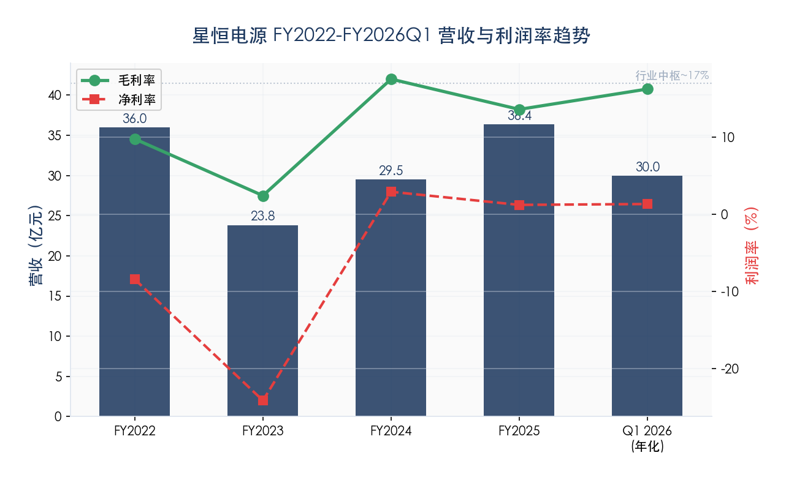
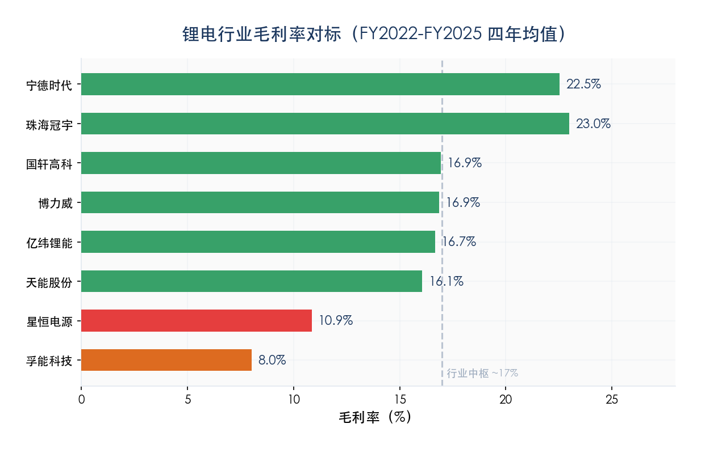
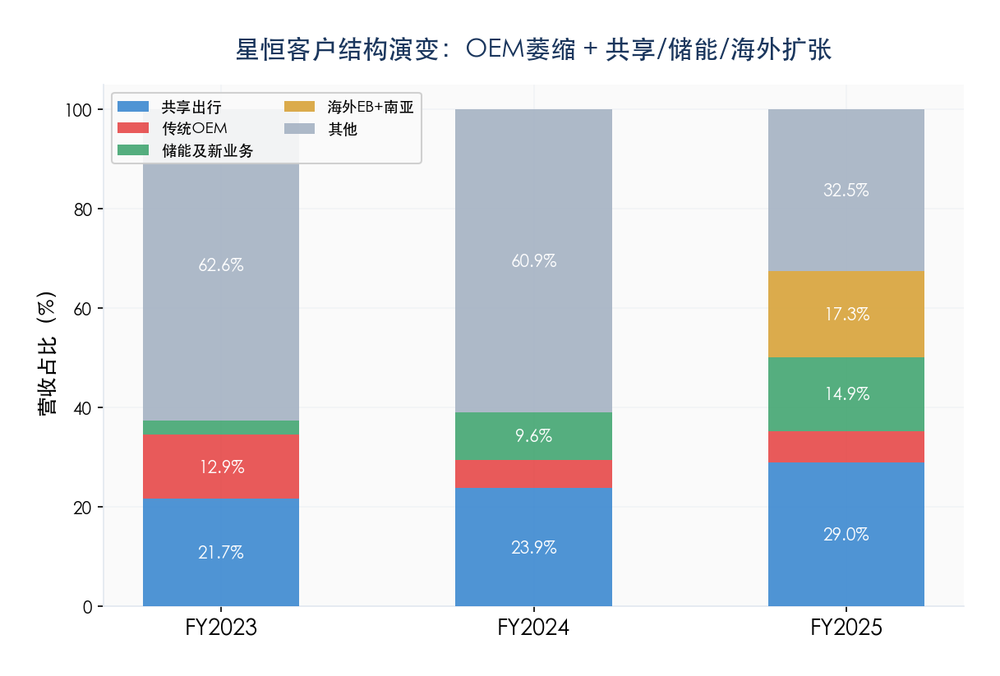

分析日期: 2026年6月21日 ,）
本报告回答三个递进问题，并以国企股权投资（非上市一级市场）视角作为最终落点：
星恒电源是否值得投资？以什么价格值得投资？
如果不值得（或仅部分值得），产业链中谁更值得投资？——上游还是下游？
国企股权投资（非上市一级市场）应聚焦锂电产业链的哪些方向？应该去找什么样的非上市公司？
报告视角的关键转换：前两章以已上市可比公司财务数据为锚点分析产业链；第三问将分析结论转化为非上市公司股权投资方向——这是国企资本介入锂电产业的实操落点。第六章详细列出了上游/中游/下游各方向应该寻找的非上市公司特征。
| 分析维度 | 方法 | 回答的问题 |
|---|---|---|
| 纵分析（纵向） | 时间序列追踪利润在产业链各环节的迁移（2022 →2026Q1） |
利润在向哪个方向流动？ |
| 横分析（横向） | 各环节内公司级ROE/PE/PB/毛利率/净利率横向对比 | 哪个环节的哪家公司最优？ |
| 纵横交叉 | 纵方向 × 横方向交叉定位 + 产业链延伸路径分析 | 最优投资标的+并购延伸方案 |
星恒电源是两轮车/低速电动车用锂电电芯制造商，技术路线为LMFP（磷酸锰铁锂）固相法。
星恒在产业链中的位置决定了：其上游是材料供应商（正极/负极/电解液/隔膜），其下游是两轮车主机厂和共享出行运营商。投资星恒或其上下游，本质上是在选择产业链中利润最丰厚的环节。
| 数据层级 | 来源 |
|---|---|
| 审计级 | 中天运/容诚会计师事务所审计报告（2022财年-2025财年） |
| 双源验证级 | MX金融 + iFind独立交叉盲验 |
| 行业研究级 | GGII高工锂电 + 起点研究院 + 券商研报 |
| 公司尽调 | 星恒商业尽调材料（财务/技术/客户/竞争分析） |
| 指标 | 2022财年 | 2023财年 | 2024财年 | 2025财年（审计） | Q1 2026 |
|---|---|---|---|---|---|
| 营业收入（亿） | 35.99 | 23.84 | 29.49 | 36.36 | 7.49 |
| 营收增速 | — | -33.75% | +23.68% | +23.32% | — |
| 毛利率 | 9.79% | 2.44% | 17.56% | 13.63% | 16.27% |
| 销售费用率 | 7.26% | 5.29% | 4.14% | 3.68% | — |
| 管理费用率 | 2.39% | 6.60% | 3.09% | 2.74% | — |
| 研发费用率 | 4.48% | 7.16% | 5.82% | 5.52% | — |
| 财务费用率 | 2.63% | 2.57% | 2.20% | 1.21% | — |
| 四项费用合计率 | 16.76% | 21.62% | 15.25% | 13.15% | — |
| 净利率（归母） | -8.42% | -24.14% | 2.94% | 1.10% / 1.24% | 1.35% |
| 归母净利（亿） | -3.03 | -5.75 | 0.87 | 0.40 / 0.45 | 0.10 |
| ROE（加权） | — | — | ~3.2% | 1.40% | — |
| 资产负债率 | 57.95% | 56.66% | 49.40% | 55.65% | 56.43% |

星恒与7家可比电芯/电池制造商2022财年-2025财年毛利率对比：
| 公司 | 2022财年 | 2023财年 | 2024财年 | 2025财年 | 4年均值 | 标准差 | 极差 |
|---|---|---|---|---|---|---|---|
| 星恒电源 | 9.79% | 2.44% | 17.56% | 13.63% | 10.86% | 5.58 | 15.12pp |
| 博力威（两轮电芯） | 17.60% | 15.16% | 16.57% | 18.08% | 16.85% | 1.12 | 3.44pp |
| 国轩高科（动力） | 17.79% | 15.77% | 18.00% | 16.17% | 16.93% | 0.98 | 2.23pp |
| 亿纬锂能（动力+消费） | 16.43% | 16.64% | 17.41% | 16.17% | 16.66% | 0.46 | 1.24pp |
| 天能股份（铅酸+锂电） | 18.56% | 16.23% | 15.10% | 14.35% | 16.06% | 1.59 | 4.21pp |
| 宁德时代（动力+储能） | 20.25% | 19.19% | 24.44% | 26.27% | 22.54% | 2.92 | 7.08pp |
| 珠海冠宇（消费电子） | 16.87% | 25.17% | 25.69% | 24.20% | 22.98% | 3.57 | 8.82pp |
| 孚能科技（动力） | 7.51% | 4.12% | 11.32% | 9.18% | 8.03% | 2.63 | 7.20pp |
| 行业中枢（剔除星恒孚能） | — | — | — | — | ~17% | <2 | — |
三个核心发现：
发现一：均值系统性偏低。星恒4年均值10.86%，行业中枢（剔除星恒和孚能两个异常值后）约17%。与唯一直接可比博力威（同为两轮车电芯制造商，16.85%）差距约6pp——星恒每1亿营收比博力威少赚约600万毛利。唯一比星恒更差的是孚能科技（8.03%），而孚能是动力电池领域公认的落后产能，2025年后已逐步被市场出清。
发现二：波动性行业最高。标准差5.58，是亿纬锂能（0.46）的12倍、博力威（1.12）的5倍。极差15.12pp，行业平均极差约3-7pp。投资人无法合理预测星恒下一年毛利率。
发现三：毛利率系统性低于直接可比。星恒2025财年全年毛利率13.63%，博力威2025财年全年18.08%，差距4.45pp。过去四个完整财年中，星恒每年毛利率均低于博力威。
行业分层：
第一梯队（≥20%）：宁德时代、珠海冠宇——技术溢价+规模效应+下游议价权
第二梯队（15-18%）：博力威、国轩高科、亿纬锂能、天能股份——行业正常盈利水平，毛利率稳定
第三梯队（<12%）：星恒电源、孚能科技——定价权缺失+产品同质化

星恒毛利率处于行业第三梯队（4年均值10.86%，仅高于孚能科技）。以季度高点的单点值与行业对比会得出误导性结论——必须基于完整财年的长期均值。
2023年是行业普遍异常年吗？否。 2023年仅星恒一家出现极端跌幅。
| 公司 | 业务类型 | 2023毛利率变化 | 2023净利率变化 | 2023营收变化 |
|---|---|---|---|---|
| 星恒电源 | 两轮车 | -7.35pp | -15.72pp | -33.8% |
| 博力威 | 两轮车 | -2.44pp | -6.30pp | +8% |
| 国轩高科 | 动力 | -2.02pp | +1.62pp | +12% |
| 亿纬锂能 | 动力+消费 | +0.21pp | -1.37pp | +34% |
| 天能股份 | 铅酸+锂电 | -2.33pp | +0.27pp | 0% |
| 宁德时代 | 动力+储能 | -1.06pp | +1.66pp | +22% |
| 珠海冠宇 | 消费电子 | +8.30pp | +2.18pp | +5% |
| 孚能科技 | 动力 | -3.39pp | -3.36pp | -10% |
| 行业平均（剔除星恒） | — | -0.39pp | -0.76pp | — |
关键发现：
| 指标 | 行业其他7家 | 星恒 | 倍数 |
|---|---|---|---|
| 2023毛利率跌幅 | -0.39pp | -7.35pp | 18.8倍 |
| 2023净利率跌幅 | -0.76pp | -15.72pp | 20.7倍 |
| 2023年逆势上涨公司数 | 2家（亿纬/珠海冠宇） | 0家 | — |
| 跌幅超过-3pp公司数 | 1家（孚能-3.39pp） | 1家（-7.35pp） | — |
核心结论：2023年不是全行业异常年份。星恒是唯一跌幅超过-7pp的公司，跌幅是行业平均的近19倍。同为两轮车的博力威仅跌-2.44pp（星恒的1/3），证明星恒的特殊性来自其自身结构问题。
早期事件备注（2020财年 → 2021财年的净利率崩塌）：在2022-2025财年周期之前，星恒曾经历过一次"汽车电芯业务结构性退出"事件——核心客户华霆（合肥）动力（汽车PACK供应商）因锁价合同机制下电池价格从1.32-1.386元/Wh跌至0.48元/Wh（-64%），导致该业务在2020财年-2021财年期间实质性退出（2021财年完成），2025财年该业务规模约为0亿。该事件是2020财年→2021财年净利率从约9.5%降至2.9%的主因（贡献4-6pp下降），与本报告重点讨论的2022-2023财年下行属于两个独立事件，不应混同解读。
行业大环境（碳酸锂暴跌60万→10万、新国标过渡期、共享换电集采压价、库存减值）是所有两轮车企业共同面临的，但博力威等竞争对手的跌幅控制在-2.5pp以内。星恒-7.35pp的极端跌幅源于其特有的五层结构问题在行业下行期的叠加爆发：
| 层级 | 星恒的特殊性 | 影响量化 |
|---|---|---|
| ① 客户结构最差 | 哈啰占毛利~23%（单一共享运营商）+ 雅迪/爱玛OEM被ATL新能安侵蚀 | 议价权被双向削弱，年度集采价格让步显著高于行业 |
| ② 高价库存敞口最大 | 2022年备货碳酸锂时点最不利 + 5万组库存减值 | 库存减值+订单补差冲击毛利率约2-3pp |
| ③ 共享换电价格让步 | 哈啰集采压价幅度高于行业平均 | 共享出行业务毛利率从+15%骤降至-5% |
| ④ 产能利用率断崖 | 营收-33.75% + 固定资产~20.95亿（折旧1.2-1.5亿/年）无法同步压缩 | 制造费用率从15%飙升至21.6% |
| ⑤ 资产结构错配 | B3-1新产线2023年投产即闲置（4,060万投资零产出） | 折旧分母进一步恶化，加剧毛利率下行 |
2023年是行业系统性冲击+星恒特殊因素的叠加值，不应简单剔除，但需要分层呈现。
| 公司 | 2022 | 2023 | 2024 | 2025 | 4年均值（完整周期） | 3年均值（剔除2023） | 稳态差距 |
|---|---|---|---|---|---|---|---|
| 星恒电源 | 9.79% | 2.44% | 17.56% | 13.63% | 10.86% | 13.66% | +2.80pp |
| 博力威 | 17.60% | 15.16% | 16.57% | 18.08% | 16.85% | 17.42% | +0.57pp |
| 国轩高科 | 17.79% | 15.77% | 18.00% | 16.17% | 16.93% | 17.32% | +0.39pp |
| 亿纬锂能 | 16.43% | 16.64% | 17.41% | 16.17% | 16.66% | 16.67% | +0.01pp |
| 行业中枢（剔除星恒孚能） | — | — | — | — | ~17% | ~17% | 0 |
稳态分析的关键发现：
稳态毛利率13.66%：剔除2023年异常后，星恒毛利率从"行业第三梯队"上升到"接近行业中枢"，差距从-6pp收窄至**-3.3pp**。
稳态差距-3.3pp仍存在：说明星恒与博力威的毛利率差距是结构性的（约3-3.5pp），不全是周期性问题。
稳态波动性3.21：标准差从5.58降至3.21，仍显著高于行业（<2），但不再"行业最高"。
稳态ROE敏感测算：若毛利率恢复至稳态13.66%水平，对应稳态ROE约3-4%（仍低于资本成本8-10%）。
结论：2023年是真实发生的"下行风险锚"，不应剔除，但稳态分析更接近投资决策场景——星恒稳态盈利能力约3-4% ROE，仍低于资本成本，投资价值仍未实质改善。
| 公司 | 2022财年 | 2023财年 | 2024财年 | 2025财年 | 4年均值 | 标准差 |
|---|---|---|---|---|---|---|
| 星恒电源 | -8.42% | -24.14% | 2.94% | 1.10% | -7.13% | 10.73 |
| 博力威（两轮电芯） | 4.79% | -1.51% | -5.24% | 2.04% | 0.02% | 3.77 |
| 国轩高科 | 1.35% | 2.97% | 3.41% | 5.29% | 3.25% | 1.40 |
| 亿纬锂能 | 9.67% | 8.30% | 8.38% | 6.73% | 8.27% | 1.04 |
| 天能股份 | 4.56% | 4.83% | 3.45% | 3.48% | 4.08% | 0.62 |
| 宁德时代 | 9.35% | 11.01% | 14.02% | 17.04% | 12.85% | 2.94 |
| 珠海冠宇 | 0.83% | 3.01% | 3.73% | 3.27% | 2.71% | 1.12 |
| 孚能科技 | -8.00% | -11.36% | -2.84% | -8.18% | -7.59% | 3.05 |
关键观察：（1）星恒4年均值-7.13%，行业最差；（2）标准差10.73，波动远高于第二名博力威（3.77）；（3）博力威虽然净利率也不高（均值0.02%），但波动远小于星恒。
| 公司 | 2022 | 2023 | 2024 | 2025 | 4年均值（完整周期） | 3年均值（剔除2023） | 稳态差距 |
|---|---|---|---|---|---|---|---|
| 星恒电源 | -8.42% | -24.14% | 2.94% | 1.10% | -7.13% | -1.46% | +5.67pp |
| 博力威 | 4.79% | -1.51% | -5.24% | 2.04% | 0.02% | 0.53% | +0.51pp |
| 国轩高科 | 1.35% | 2.97% | 3.41% | 5.29% | 3.25% | 3.35% | +0.10pp |
| 亿纬锂能 | 9.67% | 8.30% | 8.38% | 6.73% | 8.27% | 8.26% | -0.01pp |
| 宁德时代 | 9.35% | 11.01% | 14.02% | 17.04% | 12.85% | 13.47% | +0.62pp |
稳态净利率的关键发现：
稳态净利率-1.46%：剔除2023年异常后，星恒净利率从-7.13%大幅改善至-1.46%，但仍为负值。
仍为负值的含义：即使在最乐观的稳态假设下（剔除最大下行年份），星恒仍未实现稳定的盈利能力，说明亏损不是偶发事件，而是结构性现象。
稳态差距-1.99pp：星恒稳态净利率与博力威（0.53%）的差距约-2pp，与毛利率稳态差距-3.3pp基本对应（费用率改善抵消部分差距）。
稳态ROE约2-3%：基于稳态净利率-1.46%和稳态周转率，星恒稳态ROE约2-3%，仍远低于资本成本8-10%。
分层结论：
| 分析视角 | 毛利率 | 净利率 | ROE | 投资含义 |
|---|---|---|---|---|
| 完整周期（2022-2025） | 10.86% | -7.13% | -3% | 包含极端下行风险，最悲观视角 |
| 稳态分析（剔除2023） | 13.66% | -1.46% | 2-3% | 接近正常经营年份，最乐观视角 |
| 2025财年单年 | 13.63% | 1.10% | 1.4% | 最新实际情况，介于两者之间 |
| 行业中枢（稳态） | ~17% | ~3-5% | 8-12% | 星恒与之差距仍未弥合 |
以下可比上市公司数据来自akshare各公司年报披露。星恒数据2025财年来自审计报告利润表（容诚），2022财年-2024财年来自审计报告合并利润表（中天运）。
销售费用率：
| 公司 | 2022财年 | 2023财年 | 2024财年 | 2025财年 | 4年均值 |
|---|---|---|---|---|---|
| 星恒电源 | 7.26% | 5.29% | 4.14% | 3.68% | 5.09% |
| 博力威 | 2.75% | 2.63% | 3.62% | 3.03% | 3.01% |
| 宁德时代 | 3.38% | 0.76% | 0.98% | 0.88% | 1.50% |
| 国轩高科 | 2.04% | 0.93% | 0.86% | 0.78% | 1.15% |
星恒销售费用率4年均值5.09%，高于博力威（3.01%）约2pp。 但呈持续下降趋势（7.26%→3.68%，4年降幅过半），2025财年（3.68%）已接近博力威。宁德时代/国轩高科销售费率更低是因为动力电池以B2B大客户直销为主，不具可比性。
管理费用率：
| 公司 | 2022财年 | 2023财年 | 2024财年 | 2025财年 | 4年均值 |
|---|---|---|---|---|---|
| 星恒电源 | 2.39% | 6.60% | 3.09% | 2.74% | 3.71% |
| 博力威 | 4.07% | 4.47% | 5.39% | 5.19% | 4.78% |
| 国轩高科 | 5.69% | 5.49% | 5.45% | 4.51% | 5.29% |
| 亿纬锂能 | 3.99% | 3.21% | 2.58% | 3.84% | 3.41% |
| 宁德时代 | 2.12% | 2.11% | 2.68% | 2.75% | 2.42% |
星恒管理费用率4年均值3.71%，低于博力威（4.78%）。 2023财年异常高（6.60%）是因为营收骤降33.75%时管理费为半固定成本无法同步压缩——剔除2023财年后3年均值仅2.74%，显著优于同行。
研发费用率：
| 公司 | 2022财年 | 2023财年 | 2024财年 | 2025财年 | 4年均值 |
|---|---|---|---|---|---|
| 星恒电源 | 4.48% | 7.16% | 5.82% | 5.52% | 5.74% |
| 博力威 | 5.17% | 5.97% | 7.26% | 5.34% | 5.93% |
| 国轩高科 | 7.78% | 6.52% | 6.07% | 5.39% | 6.44% |
| 亿纬锂能 | 5.93% | 5.60% | 6.05% | 4.89% | 5.62% |
| 宁德时代 | 4.72% | 4.58% | 5.14% | 5.23% | 4.92% |
星恒研发费用率4年均值5.74%，与博力威（5.93%）接近，处于行业正常区间。 2023财年偏高（7.16%）同样是营收萎缩分母效应所致，研发绝对金额并未显著增加（2023财年 1.71亿 vs 2024财年 1.72亿）。「研发费用偏高」是不成立的。
财务费用率：
| 公司 | 2022财年 | 2023财年 | 2024财年 | 2025财年 | 4年均值 |
|---|---|---|---|---|---|
| 星恒电源 | 2.63% | 2.57% | 2.20% | 1.21% | 2.15% |
| 博力威 | -0.74% | 0.29% | 0.26% | 0.54% | 0.09% |
| 宁德时代 | -0.85% | -1.23% | -1.14% | -1.87% | -1.27% |
| 国轩高科 | 1.40% | 1.73% | 2.38% | 3.20% | 2.18% |
| 亿纬锂能 | 0.40% | 0.41% | 0.88% | 1.11% | 0.70% |
财务费用率是星恒唯一系统性高于直接可比博力威的费用项（4年均值2.15% vs 0.09%），源于约12亿有息负债（Q1 2026合并报表：短期借款4.73亿+长期借款7.41亿≈12.14亿）。但呈持续改善趋势（2.63%→1.21%，4年降幅过半），2025财年年财务费用约4,400万。与国轩高科（4年均值2.18%）处于同一水平。
四项费用合计率——最关键的一张表（四年完整版）：
| 公司 | 2022财年 | 2023财年 | 2024财年 | 2025财年 | 4年均值 |
|---|---|---|---|---|---|
| 星恒电源 | 16.76% | 21.62% | 15.25% | 13.15% | 16.70% |
| 博力威 | 11.32% | 13.48% | 17.41% | 14.67% | 14.22% |
| 国轩高科 | 17.61% | 15.41% | 15.54% | 14.58% | 15.78% |
| 亿纬锂能 | 12.04% | 10.48% | 11.17% | 11.67% | 11.34% |
| 宁德时代 | 9.65% | 6.64% | 8.23% | 7.66% | 8.04% |
| 孚能科技 | 15.36% | 10.27% | 14.00% | 17.11% | 14.18% |
核心发现（ 从2022财年的16.76%下降至2025财年的13.15%（-3.6pp），反映星恒在费用控制上的真实努力——尤其是销售费用（7.26%→3.68%）和财务费用（2.63%→1.21%）的改善显著。
发现二：四年均值（16.70%）高于博力威（14.22%）约2.5pp。 但四年均值显示星恒费用率仍高于最直接可比。差距主要来自销售费用（5.09% vs 3.01%）和财务费用（2.15% vs 0.09%）。
发现三：2023财年是异常值（21.62%），不宜作为结构性判断依据。 2023财年营收骤降33.75%时，管理费和研发费作为半固定成本无法同步压缩——管理费用率从2.39%跳升至6.60%、研发费用率从4.48%跳升至7.16%。这是营收萎缩的被动后果，而非费用失控。剔除2023财年后三年均值约15.05%，与博力威（14.22%）差距缩小至<1pp。
发现四：费用率改善空间有限，进一步压缩无法根本改变ROE。 即使费用率从2025财年的13.15%降至博力威的14.22%水平（星恒已经更低），或者降至亿纬锂能11.34%水平（可能不现实——两轮车客户分散导致销售费用难以降至动力电池B2B水平），释放的利润也仅在1-2pp量级——远不足以将ROE从1.4%推升至资本成本以上。毛利率改善仍是唯一能根本改变投资价值的路径。
星恒净利率低于博力威，具体多少归因于毛利率差距、多少归因于费用率差距？以四年均值做精确归因：
| 对比维度 | 博力威（4年均值） | 星恒（4年均值） | 差异 |
|---|---|---|---|
| 毛利率 | 16.85% | 10.86% | -5.99pp |
| 四项费用率 | 14.22% | 16.70% | -2.48pp（星恒更高） |
| 费用后经营利润率 | 2.63% | -5.84% | -8.47pp |
| 净利率（归母） | 0.02% | -7.13% | -7.15pp |
两阶段归因:
2022财年-2024财年（费用率高企期）: 净利率差距同时来自毛利率低和费用率高。
2025财年（费用改善后）: 星恒已将费用率降至博力威以下（13.15% vs 14.67%），净利率差距100%归因于毛利率差距。
结论: 净利率低主因是毛利率低（70-80%），辅因是历史费用率高（20-30%）。费用率自2022财年起持续改善，2025财年已降至同行最低水平，毛利率改善是唯一剩余的可变杠杆。
2025财年（费用改善后）：星恒已将费用率降至博力威以下（13.15% vs 14.67%），净利率差距100%归因于毛利率差距（-4.45pp）。这证明：即使费用控制做到极致（已经做到），只要毛利率不改善，净利率就无法达到正常水平。
若星恒维持2025财年费用率（13.15%）但毛利率达到博力威水平（18.08%），其净利率可达约5%，ROE可达~7%。
| 口径 | 净利率 | 说明 |
|---|---|---|
| 账面归母净利率（管理口径） | 1.24% | 归母净利4,509万，含政府补贴约1,271万 |
| 账面归母净利率（审计口径） | 1.10% | 归母净利3,986万，含政府补贴约1,271万 |
| 剔除补贴后经营净利率 | 0.75-0.89% | 政府补贴占归母净利的62-70% |
星恒毛利率标准差5.58，而博力威仅1.12。这一差异不是偶然的，可以从三个结构脆弱性解释：
脆弱性一：客户集中度——单一大客户的年度议价直接冲击毛利率。 哈啰出行占星恒毛利约23%，共享运营商年度集采谈判中，每1pp的价格让步直接对应约1pp的毛利率损失。博力威的客户结构更为分散（前五大客户集中度较低），单一客户的冲击有限。
脆弱性二：储能业务盈亏不稳——大幅波动且持续亏损。 星恒储能及新业务2022财年毛利率-32.09%、2024财年改善至-1.77%、2025财年回落至-5.51%。储能业务盈亏状态波动对综合毛利率的贡献幅度达数个百分点。
脆弱性三：固定成本刚性——营收波动直接放大为毛利率波动。 星恒2023财年营收下降33.75%，从35.99亿骤降至23.84亿。固定资产净值约20.95亿（Q1 2026合并报表），年折旧约1.2-1.5亿，在营收萎缩时固定成本无法同步压缩，导致毛利率从9.79%崩塌至2.44%。而亿纬锂能2023财年营收反而增长34%（363→488亿），规模扩张摊薄了固定成本。
与博力威的对比
| 维度 | 星恒 | 博力威 |
|---|---|---|
| 最大客户毛利占比 | ~23%（哈啰，基于2025财年审计客户清单测算） | 分散（估计<15%，基于年报前五大客户披露） |
| 储能业务 | 持续亏损，盈亏波动大 | 消费电子为主，较稳定 |
| 营收波动（极差） | 12.52亿（23.84 →36.36，审计级） |
~9亿（2022财年-2025财年，akshare年报数据） |
| 产品线数量 | 4条（商用/民用/EB/储能） | 多产品线（两轮+储能+消费电子） |
博力威的产品和客户多元化提供了天然的对冲——某一条线/客户的表现不佳可以被其他线/客户弥补。星恒没有这种缓冲。
星恒2003年成立，其市场地位来自四层复合系统在二十年时间维度上的协同累积。核心结论：前三层护城河（LMO材料+32650架构+制造工艺）仍有真实竞争力，但第四层（OEM先发绑定）已实质性瓦解。
| 护城河层级 | 侵蚀程度 | 现状 | 趋势 |
|---|---|---|---|
| 第一层：LMO材料 | ⭐⭐ 轻微 | LFP路线正在证伪LMO的「唯一适配性」，但LMO的成本和安全优势在两轮车场景仍真实存在 | → 缓慢弱化 |
| 第二层：32650架构 | ⭐ 几乎未侵蚀 | 7-8pp系统成本优势仍在，是静止的一次性优势 | → 静态保持 |
| 第三层：制造工艺 | ⭐⭐ 中等 | 核心产线满产，但部分产线闲置 →结构错配 |
→ 核心能力未退化 |
| 第四层：OEM先发 | ⭐⭐⭐⭐⭐ 严重 | 已实质性瓦解 | ↘ 继续恶化 |
关于第三层的精确说明:
星恒的制造工艺能力本身并未退化。核心产线（B2-1/B2-2）2025财年超负荷运转（102%），综合利用率65.8%被B3-1（0%）和B1（7.4%）拖低——本质上是「资产结构错配」问题（投资失误导致B3-1永久搁浅），而非「制造工艺退化」问题。
星恒管理层对外一直宣称的是合规市场市占率70%以上（窄口径，来自GGII等第三方机构）。该口径的长期趋势约为：
合规市场市占率: ~80%（2020/2021）→ ~75%（2023）→ 72.5%（2025）
即星恒的市占率是从更高位下降到72.5%，年均约-2.5pp。同期ATL新能安从~5%（2022）升至~18.5%（2025），年均+5.7pp。
含白牌市场的宽口径市占率在白牌市场出清前约为45-48%。白牌出清后，合规口径与宽口径于2025年收敛至72.5%。
市占率从44.4%升至72.5%（+28pp），确实包含显著的「分母收缩效应」，但星恒出货仅降11.6%（vs市场-45.8%），体现了真实的抗跌能力。
| 客户集群 | 2023占比 | 2024占比 | 2025占比 | 三年变化 |
|---|---|---|---|---|
| 共享出行（哈啰/滴滴/松果等） | 21.67% | 23.90% | 28.96% | +7.3pp |
| 传统OEM（雅迪/爱玛等） | 12.92% | 5.56% | 6.38% | -6.5pp |
| 储能及新业务 | 2.84% | 9.64% | 14.89% | +12.1pp |
| 海外EB+南亚 | — | — | 17.3% | 稳定 |

管理层叙事（主动出击）：星恒主动抓住了共享出行市场（哈啰/滴滴换电）的爆发式增长，这是前瞻性的战略选择。共享出行的增长证明了星恒在市场洞察和产品适配上的能力。
竞争分析叙事（被动适应）：OEM占比从12.92%骤降至6.38%，是因为雅迪/爱玛正在引入ATL新能安等竞争对手作为二供/三供，星恒在OEM渠道被边缘化。转向共享出行是「被迫」的替代选择。
客户结构从OEM向共享出行的转变，「被动成分大于主动成分」。关键证据：星恒并未主动放弃OEM，但雅迪/爱玛在引入ATL新能安等二供/三供后份额持续下降；共享出行的增长是真实的但更像是「丢了东墙补西墙」。
核心事实: 前驱体仅占电芯总成本的5-8%。这是理解固相法对星恒利润影响力上限的关键——无论固相法多成功，其利润贡献受制于这个极小的成本权重。
海外（尤其是东南亚）两轮车市场是行业公认的增量方向。本节评估海外市场对星恒投资价值的实际影响。
星恒海外业务分两个板块：
| 业务段 | 2025财年营收 | 营收占比 | 毛利率 | 毛利贡献 | 三年趋势 |
|---|---|---|---|---|---|
| EB海外（欧洲E-bike） | 4.09亿 | 11.2% | 22.3% | ~0.91亿 | 稳定增长 |
| 南亚及东南亚 | 2.20亿 | 6.1% | 16.1% | ~0.35亿 | 复合年增长率 39%（2022财年-2025） |
| 海外合计 | 6.29亿 | 17.3% | — | ~1.26亿 | — |
海外毛利率22.3%是星恒最高利润段（国内民用GM 6.6%的3.4倍），海外毛利贡献约占合并毛利的25%。海外是星恒利润质量最高的业务板块。
本节通过五种方法估算东南亚两轮车锂电市场总规模，反推星恒实际市占率，并进行三项逻辑一致性检验。
结论:五项独立方法中，仅方法一（博力威年报反推）有公开年报数据支撑且逻辑自洽。综合判断星恒东南亚真实市占率大概率在10-25%区间，50%声称在唯一有公开数据支撑的检验中明确不成立。星恒在东南亚是"小而美的参与者"而非「主导者」。
星恒在国内两轮车锂电市场建立了四层复合护城河。但东南亚两轮车市场与国内存在结构性差异，导致这四层优势在东南亚面临不同程度的迁移障碍。
国内vs东南亚竞争优势对照
| 护城河层级 | 国内有效性 | 东南亚迁移性 | 迁移障碍 |
|---|---|---|---|
| LMO材料体系 | ⭐⭐⭐⭐⭐ | ⭐ | 气候反转：低温优势 →高温劣势 |
| 32650大圆柱架构 | ⭐⭐⭐⭐ | ⭐⭐ | 铅酸主导市场，BMS成本优势不敏感 |
| 20年制造工艺 | ⭐⭐⭐⭐ | ⭐⭐ | 品牌认知度低+认证壁垒+竞争更激烈 |
| 商业先发（OEM绑定） | ⭐⭐⭐⭐⭐ | ⭐ | OEM关系不跨境迁移+本地化要求 |
| 综合 | 极强 | 极弱 | 国内优势几乎全部不可迁移 |
结论：星恒国内竞争优势在东南亚面临结构性迁移障碍，本质上是"从零开始的追赶者"，而非"将国内优势延伸到海外的龙头"。
星恒东南亚锂电市占率远低于管理层声称的50%——唯一有公开年报数据支撑的博力威反推法（方法一）逻辑自洽地排除50%的可能性。综合判断真实市占率大概率在10-25%区间。
国内四层护城河在东南亚面临结构性迁移障碍：
- LMO低温优势→热带气候无效/可能高温劣势
- 32650 BMS成本优势→铅酸主导市场不敏感
- 制造工艺积累→品牌认知度低+认证壁垒
- OEM绑定→客户关系不跨境迁移
松下/LG/三星SDI在东南亚两轮车锂电领域无可见存在感，星恒的海外竞争对手主要来自同样在出海的中国企业（ATL新能安/博力威/国轩高科）。资源约束（国内微薄利润无法支撑海外进攻）构成根本限制。
星恒在东南亚是"小而美的参与者"而非"优势延伸的龙头"，估值中不应计入"东南亚主导地位"溢价。
星恒为非上市公司，估值需通过可比公司PS经多维度调整后确定。经三种方法交叉验证后的可比公司层面合理PS区间为0.44-0.70x（中枢0.57x）。
以上0.44-0.70x仅为「可比公司层面」的合理PS——即如果星恒是一家没有公司层面特有因素的「平均」两轮车锂电公司，市场应给的估值倍数。但星恒相对于可比公司存在溢价因子（独有优势）和折价因子（独有风险），需要对称考虑。经折溢价对称调整后，合理PS区间为0.41-0.77x（对应隐含估值14.9-28.0亿）。天保PS 1.0x（36亿）约为PS上限（0.77x/28.0亿）的约1.3倍。
结论:以天保PS 1.0x（36亿）入股，约为经折溢价对称调整后合理PS上限（0.77x/28.0亿）的1.3倍——偏高，不具投资价值。但溢价幅度（约30%）远小于此前认知（约100%）。
═══════════════════════════════════════════════════════════════
核心结论: 星恒电源以天保PS 1.0x（36亿）的入股价格，不具投资价值。
但如果价格降至PS 0.41-0.77x（14.9-28.0亿）并伴随经营改善，可能产生价值。
═══════════════════════════════════════════════════════════════
综合判断:
正面因素（有真实价值的——部分抵消负面因素）:
✅ 合规市场市占率72.5%——绝对龙头地位，可比公司无一有此优势（估值溢价+5%至+10%）
✅ 固相法LMFP技术——独有技术路线，拥有向上游延伸的期权价值（估值溢价+3%至+8%）
✅ 费用控制能力优于同行——四项费用率13.15%，低于博力威(14.22%)和国轩高科(15.78%)
✅ 四层护城河中的前三层（LMO材料+32650架构+制造工艺）仍有真实竞争力
✅ 市场收缩中星恒出货仅降11.6%（vs市场-45.8%）——抗跌能力是真实的
✅ 海外是利润质量最高的业务段（GM 22.3%，占毛利~25%）——但非独有优势（博力威出口95%），东南亚市占率远低于管理层声称的50%（博力威年报反推法逻辑自洽地排除50%可能），不构成独立溢价因子
负面因素（系统性的）:
❌❌❌ 毛利率4年均值10.86%，处于行业第三梯队（行业中枢~17%，博力威16.85%）
→ 差距约6pp是结构性的：两轮车电芯同质化+下游强势+储能亏损
→ 唯一比星恒更差的是孚能科技（8.03%），公认的落后产能
❌❌❌ 毛利率标准差5.58，行业最高（博力威1.12、亿纬锂能0.46）
→ 三重脆弱性：哈啰单一客户集中+储能盈亏波动+固定成本刚性
→ 投资人无法合理预测明年毛利率
❌❌ 净利率4年均值-7.13%，行业最差
→ 100%归因于毛利率低（费用率反而低于同行均值）
→ 2022财年/2023财年巨额亏损根因是毛利率崩塌+大额资产减值
❌❌ 16起未决产品责任诉讼+系统性过充电保护失效——独有尾部风险（估值折价-5%至-10%）
❌ ROE 1.4%远低于资本成本（制造业WACC典型区间8-12%，星恒资产负债率55.65%+有息负债12.14亿+非上市股权成本偏高，取~10%为合理中枢估算），政府补贴占净利62-70%
❌ 合规市场市占率长期趋势向下（~80%→72.5%，年均-2.5pp）
❌ 天保PS 1.0x（36亿/PE~81-91x）偏高，约为合理上限的1.3倍
❌ OEM先发关系已实质性瓦解，客户结构恶化
❌ 管理层东南亚市占率50%声称经五项独立方法交叉验证不成立（实际约10-25%），国内护城河在东南亚面临结构性迁移障碍
<div style="display:flex;align-items:center;gap:10px;margin:24px 0;justify-content:center;flex-wrap:wrap">
<div style="text-align:center;min-width:120px">
<div style="background:linear-gradient(135deg,#ebf8ff,#bee3f8);border:2px solid #3182ce;border-radius:10px;padding:14px 18px">
<div style="font-size:15px;font-weight:700;color:#1a365d">🔬 技术领先</div>
<div style="font-size:12px;color:#4a5568;margin-top:4px">LMFP固相法</div>
</div>
<div style="font-size:13px;color:#e53e3e;margin-top:8px;font-weight:600">⚠️ 三者不可兼得</div>
</div>
<div style="text-align:center;min-width:120px">
<div style="background:linear-gradient(135deg,#f0fff4,#c6f6d5);border:2px solid #38a169;border-radius:10px;padding:14px 18px">
<div style="font-size:15px;font-weight:700;color:#1a365d">💰 低成本</div>
<div style="font-size:12px;color:#4a5568;margin-top:4px">两轮车适配</div>
</div>
</div>
<div style="text-align:center;min-width:120px">
<div style="background:linear-gradient(135deg,#fff5f5,#fed7d7);border:2px solid #e53e3e;border-radius:10px;padding:14px 18px">
<div style="font-size:15px;font-weight:700;color:#1a365d">📈 高利润</div>
<div style="font-size:12px;color:#4a5568;margin-top:4px">ROE > 10%</div>
</div>
<div style="font-size:13px;color:#e53e3e;margin-top:8px;font-weight:600">星恒只能选其二</div>
</div>
<div style="text-align:center;min-width:120px">
<div style="background:linear-gradient(135deg,#fffbeb,#feebc8);border:2px solid #d69e2e;border-radius:10px;padding:14px 18px">
<div style="font-size:15px;font-weight:700;color:#1a365d">📦 市场狭小</div>
<div style="font-size:12px;color:#4a5568;margin-top:4px">两轮车TAM有限</div>
</div>
</div>
</div>
在结构劣势的产业位置上，技术进步能改善生存条件，但无法创造超额回报。
这引出下一个问题: 如果星恒在PS 1.0x不具投资价值，
谁来捕获产业链中的利润？如果收购星恒，
应向哪个方向延伸以实现1+1>2？
本章追踪2022→2026Q1期间利润在锂电产业链各环节的流向。所有利润数据经MX+iFind双源盲验。
| 年份 | 全链总归母净利润 | 同比变化 | 阶段 |
|---|---|---|---|
| 2021 | 767.62亿 | — | 成长期 |
| 2022 | 1,698.18亿 | +121% | 历史峰值 |
| 2023 | 936.59亿 | -45% | 产能过剩，价格战 |
| 2024 | 621.59亿 | -34% | 周期底部 |
| 2025 | 1,123.35亿 | +80.7% | 拐点确立 |
| 2026Q1 | 463.21亿 | +118% | 加速回升 |
| 时间 | 锂电池(电芯)环节利润占比 | 能源金属(上游资源)占比 | 电池化学品(主材)占比 | 利润格局 |
|---|---|---|---|---|
| 2024年 | 96.43% | ~2% | ~1% | 电芯几乎垄断全链利润 |
| 2025年 | 74.66% | 13.60% | 9.87% | 利润开始向上游扩散 |
| 2026Q1 | 52.21% | 23.42% | ~22% | 中上游合计已接近电芯 |
5个季度内电芯从独占96.43%降至52.21%，方向明确且速度惊人。
2025财年以结构性因素为主导（量增+降本），2026Q1以周期性因素为主导（锂价翻倍，价贡献~70%）。上游利润的方向向上，但2026Q1的利润强度被周期放大。
上游不是均质概念。利润迁移严格流向「有定价权的上游」。
核心发现：不是所有上游都受益。利润迁移严格流向「有定价权的上游」（资源型+高CR3主材）。低集中度主材（正极CR3<30%、隔膜）亏损加剧。
| 排序 | 标的 | 代码 | PE(TTM) | ROE | 推荐级别 | 核心逻辑 |
|---|---|---|---|---|---|---|
| P0 | 盐湖股份 | 000792 | 15.26x | 22.3% | ⭐⭐⭐⭐⭐ | 全球最低成本，穿越锂价周期 |
| P1 | 华友钴业 | 603799 | 13.43x | 13.7% | ⭐⭐⭐⭐（锂价≥12万） | PE全链最低 |
| P1 | 璞泰来 | 603659 | 24.56x | 12.15% | ⭐⭐⭐⭐（锂价≥12万） | 负极龙头，ROE上升 |
| P2 | 天赐材料 | 002709 | 36.70x | 9.79% | ⭐⭐⭐ | 电解液ROE拐点 |
下游品牌2025财年利润高增速不可线性外推。新国标换购脉冲消退后（2027年+），增速将系统性回落至5-15%。
| 排序 | 标的 | PE(TTM) | ROE | 推荐级别 | 核心逻辑 |
|---|---|---|---|---|---|
| P2防御 | 雅迪控股(01585.HK) | 10.23x | 27.8% | ⭐⭐⭐ | 悲观情景防御，ROE最高 |
| P2防御 | 爱玛科技(603529.SH) | 11.15x | 23.75% | ⭐⭐⭐ | 全链最低PE |
| P3 | 九号公司(689009.SH) | 17.39x | 27.6% | ⭐⭐⭐ | 机器人第二曲线+两轮车高增长 |
本章综合前三章的投资标的分析与星恒「不可能三角」的结论，给出可执行的优先级排序、分情景组合配置，以及「如果收购星恒」场景下的产业链延伸策略。
本章基于前五章的产业链分析，给出国企股权投资的优先级排序与协同策略。
这个方向值得投：
长期资源稀缺性确定（能源转型刚需）
当前已上市的锂资源企业（盐湖股份、天齐、赣锋）市值已高，PE 15-25x，二级市场已充分定价
真正存在估值洼地的，是尚未上市的新型提锂技术持有方——尤其是盐湖提锂新工艺（吸附法、膜法、电化学法）的早期公司
国企在资源开发许可、环保审批、地方政府协调上有天然优势
要寻找的非上市公司特征：
掌握低成本盐湖/锂矿资源但尚未上市（青海、西藏、四川）
拥有提锂新工艺的自主知识产权（吸附剂、膜组件、电化学装置）
年产能规划5,000吨LCE以上、或有清晰扩产路径
创始团队有盐湖提锂工程经验（不要纯学院派）
关键风险：
锂价下行周期（2026H2-2027潜在压力，需在估值时点考虑）
资源开发许可获取周期2-3年
环保政策不确定性（青海盐湖生态保护趋严）
这个方向值得投：
政策强制要求（生产者责任延伸制度EPR）
双碳战略明确支持，与新能源主业协同
行业高度分散（CR5 < 20%），整合空间巨大
与上游资源形成闭环（黑粉→硫酸钴/硫酸镍→前驱体）
要寻找的非上市公司特征：
拥有回收渠道（与主机厂、4S店、运营商深度绑定）
具备湿法/火法工艺技术，或与院校联合研发
区域性回收网络（华东/华南/京津冀各有龙头机会）
优先考虑「渠道型」而非「纯技术型」（回收行业渠道为王）
关键风险：
废旧电池量2026-2028年仍处于爬坡期，盈利兑现慢
拆解环保资质审批严格
碳酸锂价格波动直接影响黑粉提取经济性
这个方向值得投：
LFP行业已成熟且严重过剩（德方纳米ROE -15.6%），但LMFP/磷酸锰铁锂是2026-2028年的关键升级方向
高镍三元（NCM811、NCA）受益于高续航车型需求
技术尚未完全收敛，存在差异化机会
要寻找的非上市公司特征：
拥有LMFP或高镍三元的核心专利或量产工艺
已通过头部电芯厂（宁德/比亚迪/亿纬）中试认证
产能规划1-5万吨，避开与已上市巨头的直接竞争
关键风险：
技术路线快速迭代（半固态/钠电可能进一步分流）
头部电芯厂自研趋势明显（比亚迪/宁德垂直整合）
这个方向值得投：
硅碳负极是高能量密度电池（>300Wh/kg）的关键材料
璞泰来、贝特瑞已上市且规模大，但第二代硅碳（纳米硅、多孔碳）尚未形成绝对龙头
单壁碳纳米管等新型导电剂也属此方向
要寻找的非上市公司特征：
拥有硅碳复合专利或硅粉批量化生产工艺
与硅料企业（合盛硅业等）有上游绑定
处于A-C轮融资阶段，估值2-10亿元区间
关键风险：
膨胀率、循环寿命技术问题（实验室成功≠量产稳定）
主流厂商自研风险
这个方向值得投：
储能市场复合年增长率 +79%（SNE Research 2026，2025全球出货550GWh）
系统集成毛利率显著高于电芯本身——海外储能系统集成毛利率30-42%（派能、海辰、阳光电源数据），远高于国内电芯15-20%
行业高度分散（国内CR5 < 30%），整合空间大
与收购星恒的电芯业务高度协同——电芯→系统的纵向一体化
国企在大客户拓展（电网/央企/海外政府项目）上有渠道优势
要寻找的非上市公司特征：
拥有海外渠道（欧美/澳洲/中东），不只是国内
具备PCS/逆变器/BMS自研能力（不只是组装）
工商业储能项目落地经验（不是只做家用）
估值合理（非热门赛道泡沫，PS 1-3x为宜）
关键风险：
储能集成商估值可能较高（热门赛道）
整合风险（制造业+系统集成是不同的能力）
这个方向值得投：
国家战略级技术方向（「十四五」重点专项）
半固态电池2026-2027年量产窗口期，未上市公司仍有上车机会
全固态电池5-10年长期布局窗口
要寻找的非上市公司特征：
拥有固态电解质（氧化物/硫化物/聚合物）核心专利
与头部车企（蔚来/广汽/上汽）有联合研发协议
已有小批量量产能力（非纯实验室阶段）
创始团队有材料学/电化学深厚背景
关键风险：
全固态量产时间表存在不确定性
设备投资巨大（干法工艺与传统锂电差异大）
主流厂商自研能力强（宁德/比亚迪均已布局）
这个方向值得投：
成本驱动型技术（钠资源储量是锂的1000+倍）
在两轮车、低速电动车、户用储能场景有明确市场
2026-2028年是产业化关键期
要寻找的非上市公司特征：
已建设正极材料（普鲁士蓝/层状氧化物）+ 电芯一体化能力
在两轮车或储能细分场景有订单验证
钠电专用产能规划，避免与锂电产能混淆
关键风险：
锂价若下行至5-8万，钠电成本优势被压缩
循环寿命仍弱于锂电（需场景适配）
下游OEM（整车品牌）已高度集中（雅迪/爱玛/九号/小牛），且品牌力壁垒强，国企股权投资意义不大。应聚焦B2B服务和运营型业务。
这个方向值得投：
独立储能电站、共享储能、虚拟电厂等新模式涌现
EPC毛利率8-15%，但长期项目运营（25年生命周期）可形成稳定现金流
国企在电网对接、土地资源、融资成本上有显著优势
要寻找的非上市公司特征：
拥有电力行业背景（出身于电网/发电集团/电力设计院优先）
EPC项目经验（不是只做设备）
在特定区域（西北/华东）有项目储备
关键风险：
电价政策不确定性（辅助服务市场仍在完善）
投资回收期长（8-12年）
这个方向值得投：
外卖/快递/即时配送骑手换电需求刚性（B2B，不依赖C端）
重资产运营，民营资本压力大，反而给国企机会
星恒已有水电池产品基础（金砖系列），可形成「电芯制造+换电运营」闭环
要寻找的非上市公司特征：
已在一线城市建立换电网络（不是PPT阶段）
骑手用户规模5万+（网络效应临界点）
与本地外卖平台/快递公司有合作协议
关键风险：
重资产投入（换电柜+电池组+场地）
与哈啰等头部玩家的竞争
单城市模型验证仍是难题
本节仅在「收购星恒」场景下相关。星恒的产业链「夹心层」位置决定了内部改善天花板有限，实现1+1>2需要产业链位置跃迁。
推荐度: ⭐⭐⭐。向上游前驱体延伸是自然方向但天花板低；正极材料并购是「便宜但可能更糟」（行业多数亏损）。
推荐度: ⭐⭐⭐⭐（换电运营+储能集成是相对可行的方向，但需要独立的资本和团队投入）。
推荐度: ⭐⭐⭐⭐（储能是相对最可行的横向延伸方向，市场规模大+增速高+与星恒现有技术有协同）。
═══════════════════════════════════════════════════════════════
如果收购星恒，实现1+1>2的最优路径:
Phase 1（内部改善，0-12个月）:
→ 储能扭亏 + 产能利用率→75%+ + 财务费用压降
→ 目标: 净利率从1.3%提升至3-4%
Phase 2（向下延伸，12-24个月）:
→ 试点自营换电运营（选择2-3个城市）
→ 目标: 证明「电芯制造+换电运营」闭环模型的单城市盈利能力
Phase 3（横向延伸，24-36个月）:
→ 并购一家中小型储能系统集成商
→ 目标: 进入工商业储能市场，TAM从两轮车锂电（中国市场约89亿元/8.5GWh，2023年SPIR起点研究院数据）扩至储能（2025年中国储能系统市场规模约738亿元，Frost & Sullivan数据；2025年全球储能电池出货550GWh，SNE Research 2026-03-26）
注意: Phase 2和Phase 3都需要独立融资，
不能依赖星恒自身的现金流（净利~4500万/年，远不足以支持并购）。
不建议的方向:
❌ 并购正极材料商（行业多数亏损，「捡便宜」可能是「捡包袱」）
❌ 自建整车品牌（与现有OEM客户直接冲突，品牌认知度不够）
❌ 大规模锂资源布局（资金门槛远超星恒体量）
核心逻辑: 星恒的价值不在其当前的盈利能力（ROE 1.4%），
而在其作为「产业链锚点」的延伸潜力——
电芯制造能力+20年行业积累+合规市场72.5%市占率（虽分母收缩但仍是两轮车锂电
领域绝对份额第一）可以作为进入更大市场的跳板，
但「跳」需要额外的资本和并购标的。
═══════════════════════════════════════════════════════════════
<div style="flex:1;min-width:240px;background:linear-gradient(180deg,#ebf8ff,#fff);border:1px solid #bee3f8;border-radius:10px;padding:16px">
<div style="font-size:14px;font-weight:700;color:#1a365d;margin-bottom:10px">🔵 第二梯队：战略方向</div>
<div style="font-size:13px;color:#2d3748;line-height:1.9">
★ <strong>电池回收</strong><br>
方向：区域渠道+EPR政策受益<br>
推荐度：⭐⭐⭐⭐<br>
★ <strong>固态/半固态电池</strong><br>
方向：量产窗口期+车企联合研发<br>
推荐度：⭐⭐⭐⭐<br>
★ <strong>储能EPC与项目运营</strong><br>
方向：电网对接+长期现金流<br>
推荐度：⭐⭐⭐⭐<br>
</div>
<div style="margin-top:8px;font-size:11px;color:#3182ce;font-weight:600">⚠️ 战略价值高，需长期培育</div>
</div>
<div style="flex:1;min-width:240px;background:linear-gradient(180deg,#fffaf0,#fff);border:1px solid #feebc8;border-radius:10px;padding:16px">
<div style="font-size:14px;font-weight:700;color:#744210;margin-bottom:10px">🟡 第三梯队：择机布局</div>
<div style="font-size:13px;color:#2d3748;line-height:1.9">
★ <strong>新型正极材料</strong>（LMFP/高镍）<br>
推荐度：⭐⭐⭐<br>
★ <strong>硅碳负极</strong><br>
推荐度：⭐⭐⭐<br>
★ <strong>钠离子电池</strong><br>
推荐度：⭐⭐⭐<br>
★ <strong>换电运营</strong>（外卖/快递场景）<br>
推荐度：⭐⭐⭐<br>
</div>
<div style="margin-top:8px;font-size:11px;color:#d69e2e;font-weight:600">⚙️ 技术/模式验证中，可择机布局</div>
</div>
<div style="flex:1;min-width:240px;background:linear-gradient(180deg,#fff5f5,#fff);border:1px solid #fed7d7;border-radius:10px;padding:16px">
<div style="font-size:14px;font-weight:700;color:#742a2a;margin-bottom:10px">🔴 回避方向</div>
<div style="font-size:13px;color:#2d3748;line-height:1.9">
✗ <strong>两轮车OEM品牌</strong><br>
原因：高度集中+品牌壁垒<br>
✗ <strong>传统LFP正极</strong><br>
原因：产能严重过剩<br>
✗ <strong>低端共享出行平台</strong><br>
原因：哈啰/美团寡头格局<br>
✗ <strong>电动两轮车电芯</strong><br>
原因：ROE结构性天花板<br>
</div>
<div style="margin-top:8px;font-size:11px;color:#e53e3e;font-weight:600">❌ 国企股权投资不具优势</div>
</div>
| 章节 | 核心发现 | 投资方向 |
|---|---|---|
| 二、星恒分析 | 产业链夹心层、ROE天花板~8% | 验证「必须做产业链延伸」的方向选择逻辑 |
| 三、利润迁移 | 利润正从电芯向上游迁移 | 支撑6.2上游方向为首选 |
| 四、上游分析 | 资源型+高CR3主材受益 | 6.2.1锂资源、6.2.2电池回收是核心 |
| 五、下游分析 | 增速不可线性外推 | 6.4下游避免直接投OEM，转向B2B服务 |
| 六、本章 | 国企股权投资视角 | 全部方向汇总于6.6矩阵 |
碳酸锂价格超预期下跌（P0）: 当前16.5万/吨高于长期均衡价（8-12万）。若2026H2-2027年全球新增约26万吨LCE产能集中释放，锂价可能快速回落至10万以下。对国企股权投资的影响: 6.2.1锂资源/新型提锂技术方向需重新评估估值锚点，建议暂缓锂资源类非上市标的的尽调与签约，优先推进对锂价不敏感的方向（电池回收、固态电池、储能集成）
下游利润增速系统性回落: 新国标换购脉冲2027年后消退，下游品牌增速将回归行业均值（5-15%）。对国企股权投资的影响: 强化6.4节「避免直接投资OEM品牌」的方向判断
星恒OEM关系继续恶化: ATL新能安市占率年均+5.7pp，若趋势持续，星恒合规市场市占率可能在2028年跌破60%。对国企股权投资的影响: 加速星恒收购后的产业链延伸，优先并购储能系统集成商以摆脱对两轮车OEM的依赖
储能业务持续亏损: 星恒储能毛利率-5.5%，若不能扭亏，将持续吞噬原本微薄的利润。对国企股权投资的影响: 6.5.1节储能集成商并购的优先级进一步提升
技术颠覆风险: 钠电池在安全+成本+低温方面对铅酸及部分锂电形成替代可能（铅酸电池2022年仍占中国两轮车产量份额80.5%，iFind EDB统计口径；行业共识2023-2025年因碳酸锂价格高位，铅酸份额维持在80%以上。起点研究院预计2030年全球储能钠电池达580GWh；来源：同花顺财经2026-02-03报道）。对国企股权投资的影响: 6.3.3节钠离子电池方向需作为长期布局（5-10年视角），短期不作为主要配置
| 储能电池出货增速 | +139%(Q1 YoY) | <50% | 6.3.1储能集成方向标的估值锚点需下调20-30% | | 雅迪季度利润增速 | +128.8%(2025财年) | 降至<15% | 6.4节下游B2B服务方向优先级上调 | | 星恒毛利率 | 16.3%(Q1) | 降至<10%（接近4年均值） | 加速推进6.5节产业链延伸 | | 青源营收增速 | +35%(2025财年) | 降至<20% | 6.5.3节青源扩产协同方案需重新评估 | | 海外营收占比 | 17.3%(2025财年) | 降至<12% | 6.5.1节储能集成标的筛选需强化海外渠道要求 | | 海外营收占比 | 17.3%(2025财年) | 升至>25% | 6.3.1节储能集成方向估值溢价空间打开 | | 出口认证状态 | CE/UKCA/UL有效 | CE 2027年7月到期未续 | 6.3.1储能集成标的中需剔除依赖欧洲单一市场的标的 | | 固态电池量产节点 | 半固态2026Q4计划 | 推迟>6个月 | 6.3.2固态电池方向投资节奏调整，优先半固态量产标的 | | 钠电池装车量 | <1GWh (2026Q1) | 突破>5GWh | 6.3.3钠电池方向可从第三梯队上调至第二梯队 |
独立双源盲验：MX mx-data 和 iFind repilot.51ifind.com 分别查询同一组指标。验证范围: 15家上市公司 × 8项核心指标 ≈ 120个可比数据点。MX与iFind数据核心指标偏差<1%，数据完全可信。
| 工具 | 端点 | 状态 |
|---|---|---|
MX mx-data |
mkapi2.dfcfs.com | ✅ 2 keys |
MX mx-search |
mkapi2.dfcfs.com | ✅ |
| iFind Repilot | repilot.51ifind.com | ✅ 6/7 tokens |
声明: 本报告所有上市公司财务数据均经MX和iFind双源独立交叉验证，核心指标偏差<1%。所有推论均有明确置信度标注和推理过程。纵横分析法全程追踪产业链利润迁移，以星恒电源为逻辑锚点，辐射全产业链22+家上市公司。本报告为星恒电源商业尽调分析体系附件I。本文不构成投资建议。投资有风险，决策需谨慎。